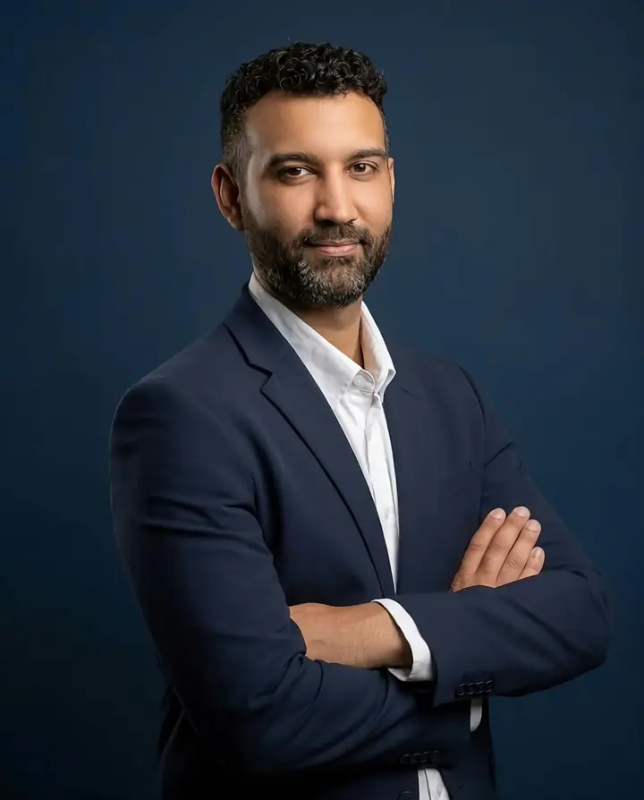
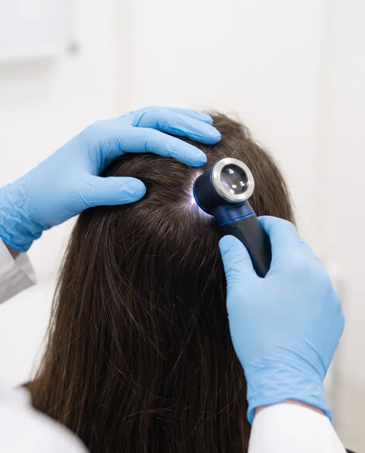
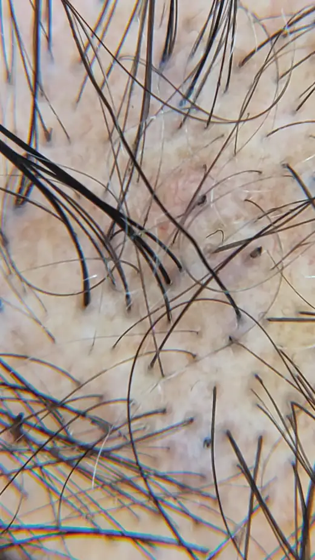
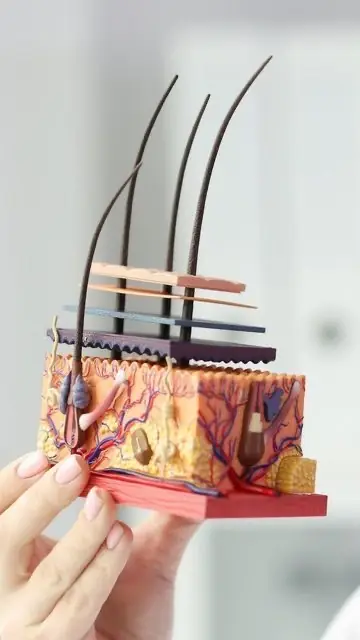
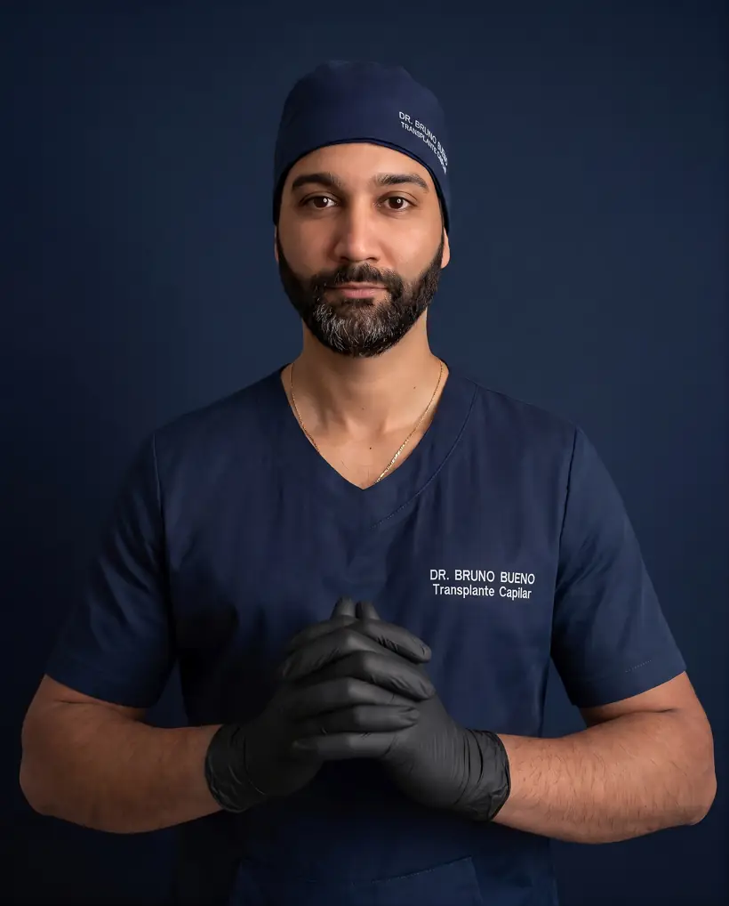

Transplante capilar FUE · Tricologia
Se você já reparou as entradas subindo nas fotos, existe uma ordem certa para resolver: primeiro a causa, depois o desenho. Do diagnóstico ao transplante, com o mesmo médico.
Quando procurar
Quanto antes, mais fios para preservar.
Afinamento vem antes da falha.
Nem toda queda é calvície.
O problema pode não ser o produto.
Esperar não é neutro. O folículo afina aos poucos até parar de produzir fio visível. O que ainda existe pode ser preservado, com ou sem cirurgia.
O trajeto do paciente
Nem todo paciente precisa operar. E quem opera tem um resultado melhor quando a causa da queda já está tratada.
01
Pelo WhatsApp da clínica. Quem é de outra cidade pode começar por teleconsulta.

02
Tricoscopia, histórico e exames. Hormônios, nutrientes, inflamação e medicações entram na conta.

03
Você sai sabendo o seu tipo de queda, o que fazer agora e se o transplante faz sentido.

04
Contínuo, com o mesmo médico e fotos padronizadas da evolução. Cuidar do cabelo não tem última consulta.
O que não fazemos: cirurgia sem avaliação presencial, orçamento fechado por foto ou pacote com promessa de densidade ou de prazo.
Transplante capilar FUE
Um transplante bem feito não chama atenção. Isso se decide antes da cirurgia.
Desenhada para o seu rosto, sua idade e como a calvície tende a evoluir.
Os fios da nuca são finitos. O planejamento preserva essa reserva.
Segue a direção natural da região, para o cabelo cair como o seu.
O crescimento é gradual. Na avaliação, você entende o que é possível.
Os resultados variam de pessoa para pessoa. Não há garantia de densidade ou de prazo.

O médico
Médico · CRM/SP 239860
Não acredito em transplante como primeira resposta. Antes de falar em cirurgia, eu quero entender por que o seu cabelo está caindo, porque é isso que decide se o resultado vai se manter daqui a dez anos.
Dedicado ao transplante capilar FUE e à tricologia. Avalia, indica, opera e acompanha cada paciente do começo ao fim, porque cuidar do cabelo não termina na cirurgia.
Local de atendimento
Rua Domingos Soares de Barros, 82
Centro · Botucatu/SP
WhatsApp(14) 99892-4063
Telefone(14) 3881-2728
Atende tambémSão Manuel, Jaú, Bauru, Marília e região
Dúvidas
Não. Muitos casos se resolvem ou se estabilizam com tratamento clínico. O transplante entra quando há área sem fios e uma área doadora que permita.
Em alguns casos, sim. A rarefação feminina tem causas próprias e quase sempre começa pelo tratamento clínico. A avaliação define se a cirurgia faz sentido.
É feita com anestesia local, no mesmo dia, sem internação. O preparo, o dia da cirurgia e a recuperação são explicados em detalhe na avaliação.
O crescimento é gradual, ao longo de meses, e varia de pessoa para pessoa. Não há como garantir densidade ou prazo.
Sim, para a primeira conversa e para seguimento. Antes de qualquer cirurgia, a avaliação é presencial, na Clínica DeMarchi One.
Os valores da avaliação são informados pela equipe da clínica no WhatsApp. O valor de um transplante depende do planejamento de cada caso e só é definido depois da avaliação.